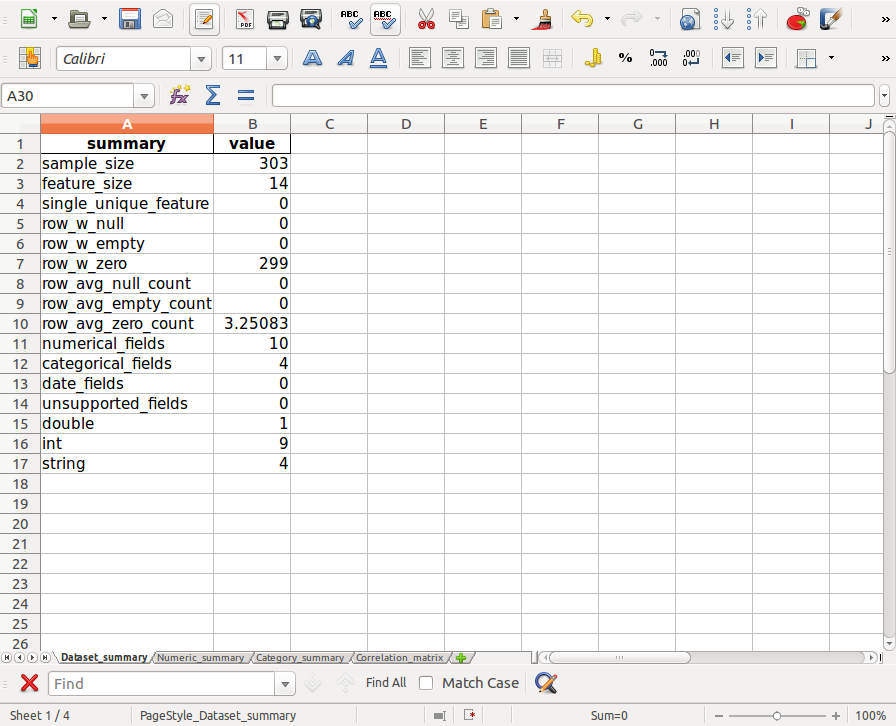
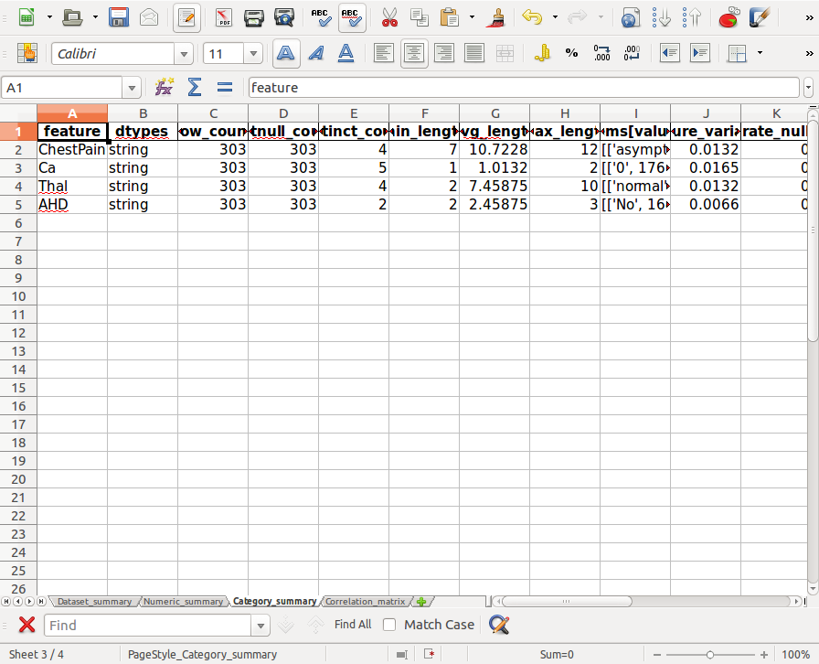
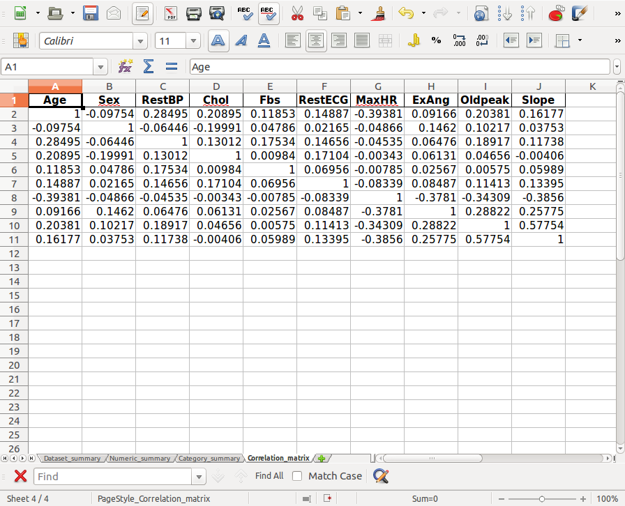
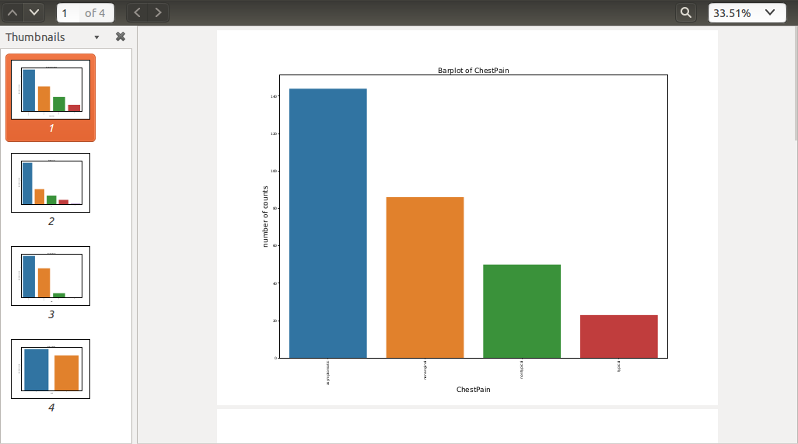
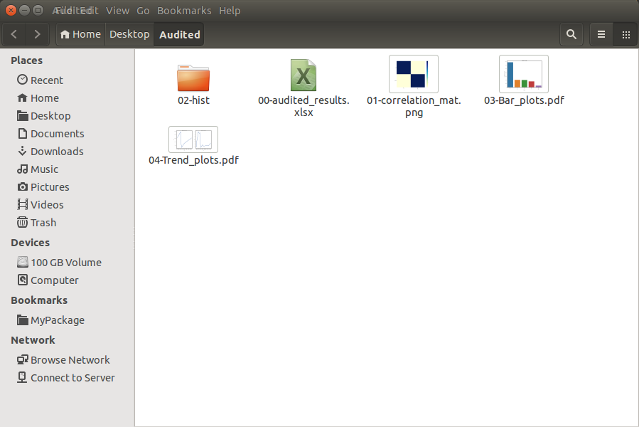

22. PySpark Data Audit Library¶
PySparkAudit: PySpark Data Audit Library. The PDF version can be downloaded from HERE. The python version PyAudit: Python Data Audit Library API can be found at PyAudit.
22.1. Install with pip¶
You can install the PySparkAudit from [PyPI](https://pypi.org/project/PySparkAudit):
pip install PySparkAudit
22.2. Install from Repo¶
22.2.1. Clone the Repository¶
git clone https://github.com/runawayhorse001/PySparkAudit.git
22.2.2. Install¶
cd PySparkAudit
pip install -r requirements.txt
python setup.py install
22.3. Uninstall¶
pip uninstall PySparkAudit
22.4. Test¶
22.4.1. Run test code¶
cd PySparkAudit/test
python test.py
test.py
from pyspark.sql import SparkSession
spark = SparkSession \
.builder \
.appName("Python Spark regression example") \
.config("spark.some.config.option", "some-value") \
.getOrCreate()
# from PySparkAudit import dtypes_class, hist_plot, bar_plot, freq_items,feature_len
# from PySparkAudit import dataset_summary, rates, trend_plot
# path = '/home/feng/Desktop'
# import PySpark Audit function
from PySparkAudit import auditing
# load dataset
data = spark.read.csv(path='Heart.csv',
sep=',', encoding='UTF-8', comment=None, header=True, inferSchema=True)
# auditing in one function
print(auditing(data, display=True))
22.4.2. Audited Results¶

The files in 00-audited_results.xlsx:
Dataset_summary

Numeric_summary

Category_summary

Correlation_matrix

Histograms in
Histograms.pdf

Barplots in
Bar_plots.pdf

22.5. Auditing on Big Dataset¶
In this section, we will demonstrate the auditing performance and audited results on the big data set.
The data set is Spanish High Speed Rail tickets pricing. It is available at :
https://www.kaggle.com/thegurus/spanish-high-speed-rail-system-ticket-pricing. This data set has 2579771
samples and 10 features.
From the following CPU time, you will see most
of the time was spent on plotting the histograms. If your time and memory are limited, we will suggest
you to use sample_size to generate the subset of the the dataset to plot histograms.
For example:
from pyspark.sql import SparkSession
spark = SparkSession \
.builder \
.appName("Python Spark regression example") \
.config("spark.some.config.option", "some-value") \
.getOrCreate()
# from PySparkAudit import dtypes_class, hist_plot, bar_plot, freq_items,feature_len
# from PySparkAudit import dataset_summary, rates, trend_plot
# Audited results output path
out_path = '/home/feng/Desktop'
# import PySpark Audit function
from PySparkAudit import auditing
# load dataset
# Spanish High Speed Rail tickets pricing - Renfe (~2.58M)
# https://www.kaggle.com/thegurus/spanish-high-speed-rail-system-ticket-pricing
data = spark.read.csv(path='/home/feng/Downloads/renfe.csv',
sep=',', encoding='UTF-8', comment=None, header=True, inferSchema=True)
# auditing in one function
auditing(data, output_dir=out_path, tracking=True)
Result:
22.5.1. print in bash¶
================================================================
The audited results summary audited_results.xlsx was located at:
/home/feng/Desktop/Audited
Generate data set summary took = 60.535009145736694 s
================================================================
Collecting data types.... Please be patient!
Generate counts took = 0.0016515254974365234 s
================================================================
Collecting features' counts.... Please be patient!
Generate counts took = 6.502962350845337 s
================================================================
Collecting data frame description.... Please be patient!
Generate data frame description took = 1.5562639236450195 s
================================================================
Calculating percentiles.... Please be patient!
Generate percentiles took = 19.76785445213318 s
================================================================
Calculating features' length.... Please be patient!
Generate features' length took = 4.953453540802002 s
================================================================
Calculating top 5 frequent items.... Please be patient!
Generate rates took: 4.761325359344482 s
================================================================
Calculating rates.... Please be patient!
Generate rates took: 17.201056718826294 s
Auditing numerical data took = 54.77840781211853 s
================================================================
Collecting data types.... Please be patient!
Generate counts took = 0.001623392105102539 s
================================================================
Collecting features' counts.... Please be patient!
Generate counts took = 12.59226107597351 s
================================================================
Calculating features' length.... Please be patient!
Generate features' length took = 5.332952976226807 s
================================================================
Calculating top 5 frequent items.... Please be patient!
Generate rates took: 6.832213878631592 s
================================================================
Calculating rates.... Please be patient!
Generate rates took: 23.704302072525024 s
Auditing categorical data took = 48.484763622283936 s
================================================================
The correlation matrix plot Corr.png was located at:
/home/feng/Desktop/Audited
Calculating correlation matrix... Please be patient!
Generate correlation matrix took = 19.61273431777954 s
================================================================
The Histograms plots *.png were located at:
/home/feng/Desktop/Audited/02-hist
Plotting histograms of _c0.... Please be patient!
Plotting histograms of price.... Please be patient!
Histograms plots are DONE!!!
Generate histograms plots took = 160.3421311378479 s
================================================================
The Bar plot Bar_plots.pdf was located at:
/home/feng/Desktop/Audited
Plotting barplot of origin.... Please be patient!
Plotting barplot of destination.... Please be patient!
Plotting barplot of train_type.... Please be patient!
Plotting barplot of train_class.... Please be patient!
Plotting barplot of fare.... Please be patient!
Plotting barplot of insert_date.... Please be patient!
Plotting barplot of start_date.... Please be patient!
Plotting barplot of end_date.... Please be patient!
Bar plots are DONE!!!
Generate bar plots took = 24.17994236946106 s
================================================================
The Trend plot Trend_plots.pdf was located at:
/home/feng/Desktop/Audited
Plotting trend plot of _c0.... Please be patient!
Plotting trend plot of price.... Please be patient!
Trend plots are DONE!!!
Generate trend plots took = 11.697550296783447 s
Generate all the figures took = 196.25823402404785 s
Generate all audited results took = 379.73954820632935 s
================================================================
The auditing processes are DONE!!!
22.5.2. Audited results folder¶
